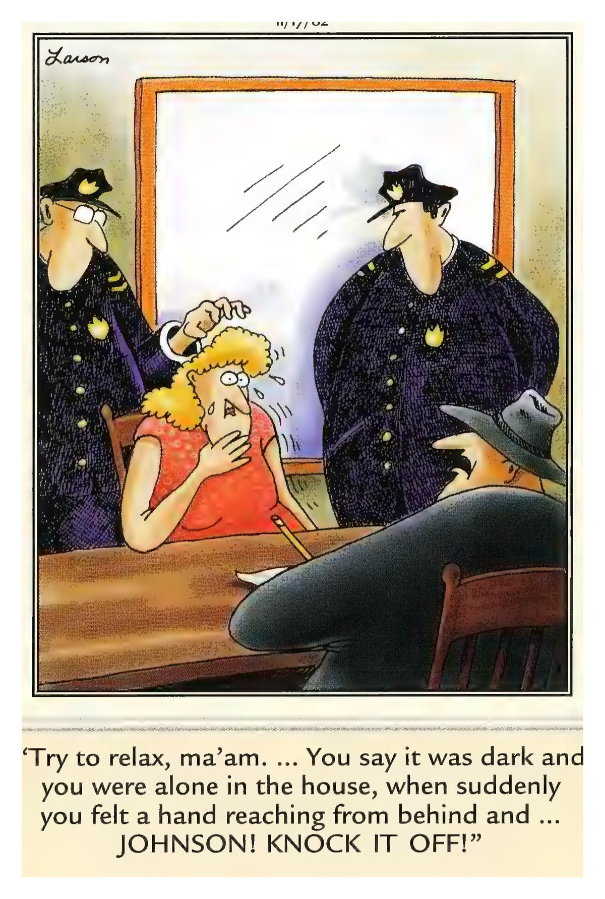

Your Daily Computer Brief
🔴 ALERT
Letters are arriving this week for 4.1 million customers of AdaptHealth — the company that delivers home medical equipment like sleep apnea and oxygen machines. Thieves stole names, health details, and insurance information. Scammers buy lists like this fast, so expect calls offering to "help you claim free credit monitoring." If you get a letter, use only the phone number printed on it — never one a caller gives you. And glance over your insurance statements for care you never received. *Source: SecurityWeek, BleepingComputer — AdaptHealth confirms 4.1 million people exposed (Sept. 9–10, 2026)*
Today in Tech
- Source: BleepingComputer (Sept. 10, 2026) — If copy-and-paste suddenly stopped working on your computer, it's not you. A recent Microsoft Office security update broke it for some people. Microsoft knows and is fixing it — no need to call anyone just yet.
- Source: BleepingComputer (Sept. 10, 2026) — Microsoft also repaired two bugs that had been wiping people's settings — mouse buttons and desktop layouts randomly resetting. Installing the latest updates gets your settings to stick again.
- Reported by BleepingComputer (Sept. 11, 2026) — A member of the gang behind some of the world's worst "your files are locked" attacks was sentenced to four years in prison. The crooks do eventually catch up with the crooks.
Daily Tip
Press Ctrl+Shift+O to open your browser's favorites list, click the three little dots at the top, and choose "Export." Save that file in your Documents folder and you're done. If your favorites ever vanish, putting every one back is a one-click job.
😄 COMEDY BREAK
